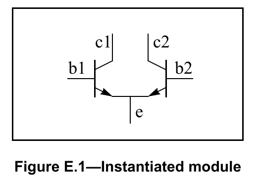
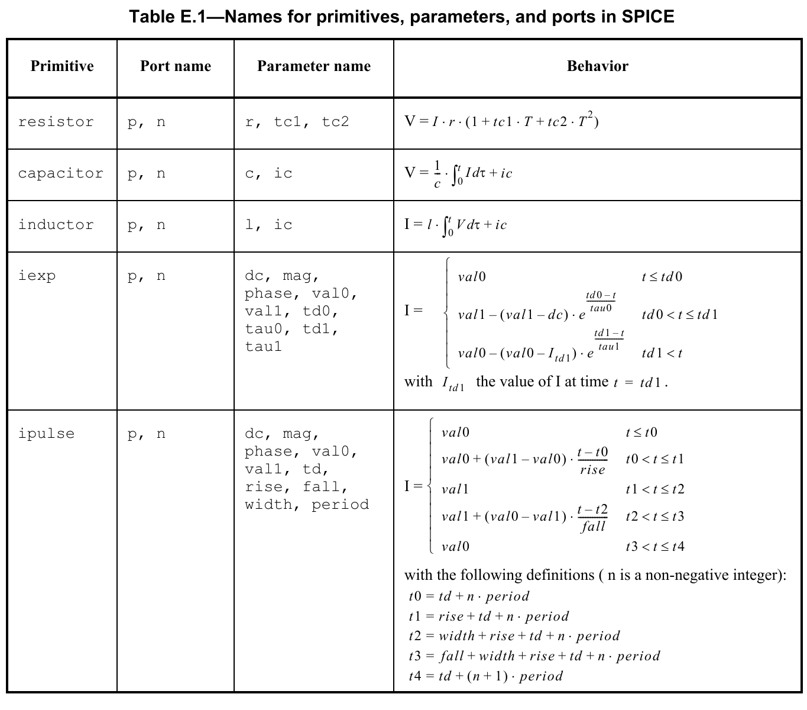
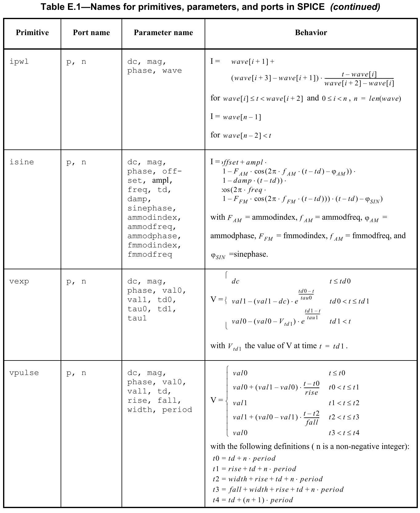
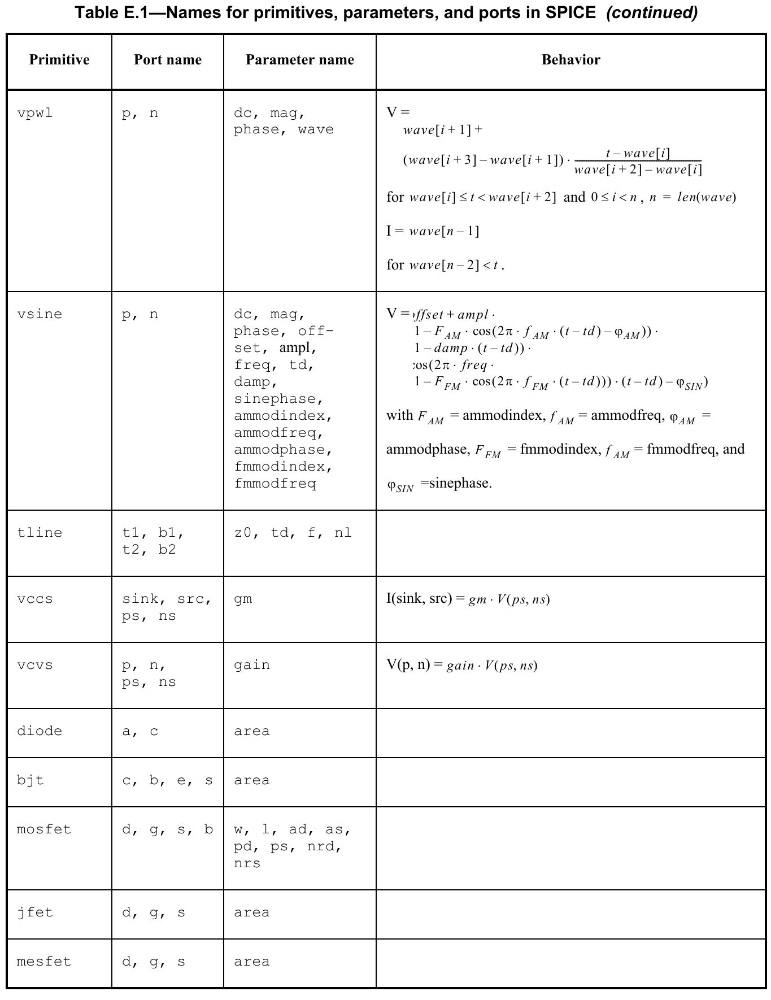

Analog simulation has long been performed with SPICE and SPICE-like simulators. As such, there is a huge legacy of SPICE netlists. In addition, SPICE provides a rich set of predefined models and it is considered neither practical nor desirable to convert these models into a Verilog-AMS HDL behavioral description. In order for Verilog-AMS HDL to be embraced by the analog design community, it is important Verilog-AMS HDL provide an appropriate degree of SPICE compatibility. This annex describes the degree of compatibility which Verilog-AMS HDL provides and the approach taken to provide that compatibility.
SPICE is not a single language, but rather is a family of related languages. The first widely used version of SPICE was SPICE2g6 from the University of California at Berkeley. However, SPICE has been enhanced and distributed by many different companies, each of which has added their own extensions to the language and models. As a result, there is a great deal of incompatibility even among the SPICE languages themselves.
Verilog-AMS HDL makes no judgment as to which of the various SPICE languages should be supported. Instead, it states if a simulator which supports Verilog-AMS HDL is also able to read SPICE netlists of a particular flavor, then certain objects defined in that flavor of SPICE netlist can be referenced from within a Verilog-AMS HDL structural description. In particular, SPICE models and subcircuits can be instantiated within a Verilog-AMS HDL module. This is also true for any SPICE primitives which are built into the simulator. In general, anything that can be instantiated in the particular flavor of SPICE can also be instantiated within a Verilog-AMS HDL module.
There are four primary areas of incompatibility between versions of SPICE simulators.
If an implementation of a Verilog-AMS tool supports SPICE compatibility, it is expected to provide the basic set of SPICE primitives (see Annex E.3) and be able to read SPICE netlists which contain models and subcircuit statements.
SPICE primitives built into the simulator shall be treated in the same manner in Verilog-AMS HDL as built-in primitives of gate- and switch-level modeling. However, while the Verilog-AMS HDL built-in primitives are standardized, the SPICE primitives are not. All aspects of SPICE primitives are implementation dependent.
In addition to SPICE primitives, it shall also be possible to access subcircuits and models defined within SPICE netlists. The subcircuits and models contained within the SPICE netlist are treated as module definitions.
Some SPICE netlists are case insensitive, whereas Verilog-AMS HDL descriptions are case-sensitive. From within Verilog-AMS HDL, a mixed-case name matches the same name with an identical case (if one is defined in a Verilog-AMS HDL description). However, if no exact match is found, the mixed-case name shall match the same name defined within SPICE regardless of the case.
This subsection shows some examples.
Consider the following SPICE model file being read by a Verilog-AMS HDL simulator.
.MODEL VERTNPN NPN BF=80 IS=1E-18 RB=100 VAF=50
+ CJE=3PF CJC=2PF CJS=2PF TF=0.3NS TR=6NSThis model can be instantiated in a Verilog-AMS HDL module as shown in Figure E.1.

module diffPair (c1, b1, e, b2, c2);
electrical c1, b1, e, b2, c2;
vertNPN Q1 (c1, b1, e);
vertNPN Q2 (.c(c2), .b(b2), .e(e));
endmoduleUnlike with SPICE, the first letter of the instance name, in this case Q1 and Q2, is not constrained by the primitive type. For example, they can just as easily be T1 and T2.
The ports and parameters of the bjt are determined by the bjt primitive itself and not by the model statement for the bjt. See E.3 for more details. This bjt primitive has 3 mandatory ports (c, b, and e) and one optional port (s). In the instantiation of Q1, the ports are passed by order. With Q2, the ports are passed by name. In both cases, the optional substrate port s is defaulted by simply not giving it.
As an example of how a SPICE subcircuit is referenced from Verilog-AMS HDL, consider the following SPICE subcircuit definition of an oscillator.
.SUBCKT ECPOSC (OUT GND)
VA VCC GND 5
IEE E GND 1MA
Q1 VCC B1 E VCC VERTNPN
Q2 OUT B2 E OUT VERTNPN
L1 VCC OUT 1UH
C1 VCC OUT 1P IC=1
C2 OUT B1 272.7PF
C3 B1 GND 3NF
R1 B1 GND 10K
C4 B2 GND 3NF
R2 B2 GND 10K
.ENDS ECPOSCThis oscillator can be referenced from Verilog-AMS HDL as:
module osc (out, gnd);
electrical out, gnd;
ecpOsc Osc1 (out, gnd);
endmoduleX as it is in SPICE.To show how various SPICE primitives can be accessed from Verilog-AMS HDL, the subcircuit in E.2.2.2 is translated to native Verilog-AMS HDL.
module ecpOsc (out, gnd);
electrical out, gnd;
vsine #(.dc(5)) Vcc (vcc, gnd);
isine #(.dc(1m)) Iee (e, gnd);
vertNPN Q1 (vcc, b1, e, vcc);
vertNPN Q2 (out, b2, e, out);
inductor #(.l(1u)) L1 (vcc, out);
capacitor #(.c(1p), .ic(1)) C1 (vcc, out);
capacitor #(.c(272.7p)) C2 (out, b1);
capacitor #(.c(3n)) C3 (b1, gnd);
resistor #(.r(10k)) R1 (b1, gnd);
capacitor #(.c(3n)) C4 (b2, gnd);
resistor #(.r(10k)) R2 (b2, gnd);
endmoduleTable E.1 shows the required names for primitives, parameters, and ports which are otherwise unnamed in SPICE. For connection by order instead of by name, the ports and parameters shall be given in the order listed. The default discipline of the ports for these primitives shall be electrical and their descriptions shall be inout.



Table E.1—Names for primitives, parameters, and ports in SPICE
| Primitive | Port name | Parameter name | Behavior |
|---|---|---|---|
resistor |
p, n |
r, tc1, tc2 |
V = I · r · (1 + tc1 · T + tc2 · T2) |
capacitor |
p, n |
c, ic |
V = (1/c) · ∫0t I dτ + ic |
inductor |
p, n |
l, ic |
I = l · ∫0t V dτ + ic |
iexp |
p, n |
dc, mag, phase, val0, val1, td0, tau0, td1, tau1 |
I = val0 for t ≤ td0 val1 − (val1 − dc) · e(td0 − t)/tau0 for td0 < t ≤ td1 val0 − (val0 − Itd1) · e(td1 − t)/tau1 for td1 < t with Itd1 the value of I at time t = td1. |
ipulse |
p, n |
dc, mag, phase, val0, val1, td, rise, fall, width, period |
I = val0 for t ≤ t0 val0 + (val1 − val0) · (t − t0)/rise for t0 < t ≤ t1 val1 for t1 < t ≤ t2 val1 + (val0 − val1) · (t − t2)/fall for t2 < t ≤ t3 val0 for t3 < t ≤ t4 with the following definitions (n is a non-negative integer): t0 = td + n · period t1 = rise + td + n · period t2 = width + rise + td + n · period t3 = fall + width + rise + td + n · period t4 = td + (n + 1) · period |
ipwl |
p, n |
dc, mag, phase, wave |
I = wave[i+1] + (wave[i+3] − wave[i+1]) · (t − wave[i]) / (wave[i+2] − wave[i]) for wave[i] ≤ t < wave[i+2] and 0 ≤ i < n, n = len(wave) I = wave[n−1] for wave[n−2] < t |
isine |
p, n |
dc, mag, phase, offset, ampl, freq, td, damp, sinephase, ammodindex, ammodfreq, ammodphase, fmmodindex, fmmodfreq |
I = offset + ampl · (1 − FAM · cos(2π · fAM · (t − td) − φAM)) · (1 − damp · (t − td)) · cos(2π · freq · (1 − FFM · cos(2π · fFM · (t − td))) · (t − td) − φSIN) with FAM = ammodindex, fAM = ammodfreq, φAM = ammodphase, FFM = fmmodindex, fAM = fmmodfreq, and φSIN = sinephase. |
vexp |
p, n |
dc, mag, phase, val0, val1, td0, tau0, td1, tau1 |
V = dc for t ≤ td0 val1 − (val1 − dc) · e(td0 − t)/tau0 for td0 < t ≤ td1 val0 − (val0 − Vtd1) · e(td1 − t)/tau1 for td1 < t with Vtd1 the value of V at time t = td1. |
vpulse |
p, n |
dc, mag, phase, val0, val1, td, rise, fall, width, period |
V = val0 for t ≤ t0 val0 + (val1 − val0) · (t − t0)/rise for t0 < t ≤ t1 val1 for t1 < t ≤ t2 val1 + (val0 − val1) · (t − t2)/fall for t2 < t ≤ t3 val0 for t3 < t ≤ t4 with the following definitions (n is a non-negative integer): t0 = td + n · period t1 = rise + td + n · period t2 = width + rise + td + n · period t3 = fall + width + rise + td + n · period t4 = td + (n + 1) · period |
vpwl |
p, n |
dc, mag, phase, wave |
V = wave[i+1] + (wave[i+3] − wave[i+1]) · (t − wave[i]) / (wave[i+2] − wave[i]) for wave[i] ≤ t < wave[i+2] and 0 ≤ i < n, n = len(wave) I = wave[n−1] for wave[n−2] < t. |
vsine |
p, n |
dc, mag, phase, offset, ampl, freq, td, damp, sinephase, ammodindex, ammodfreq, ammodphase, fmmodindex, fmmodfreq |
V = offset + ampl · (1 − FAM · cos(2π · fAM · (t − td) − φAM)) · (1 − damp · (t − td)) · cos(2π · freq · (1 − FFM · cos(2π · fFM · (t − td))) · (t − td) − φSIN) with FAM = ammodindex, fAM = ammodfreq, φAM = ammodphase, FFM = fmmodindex, fAM = fmmodfreq, and φSIN = sinephase. |
tline |
t1, b1, t2, b2 |
z0, td, f, nl |
|
vccs |
sink, src, ps, ns |
gm |
I(sink, src) = gm · V(ps, ns) |
vcvs |
p, n, ps, ns |
gain |
V(p, n) = gain · V(ps, ns) |
diode |
a, c |
area |
|
bjt |
c, b, e, s |
area |
|
mosfet |
d, g, s, b |
w, l, ad, as, pd, ps, nrd, nrs |
|
jfet |
d, g, s |
area |
|
mesfet |
d, g, s |
area |
inductor behavior multiplies by l rather than by 1/l; both sine-source definition lines label fmmodfreq as fAM rather than fFM; and the final vpwl expression begins with I rather than V. The following paragraph also preserves the published cross-reference to 7.5, even though paramsets are specified in 6.4.Although in a SPICE context the primitives for diode, bjt, mosfet, jfet, and mesfet can be used only in a model definition, in Verilog-AMS they may be used directly in a paramset statement as described in 7.5.
Verilog-AMS HDL does not support the concept of passing an instance name as a parameter. As such, the following primitives are not supported: ccvs, cccs, and mutual inductors; however, these primitives can be instantiated inside a SPICE subcircuit that itself is instantiated in Verilog-AMS.
To afford the ability to use analog primitive in any design, including mixed disciplines, the default discipline override is provided. The discipline of analog primitives will be resolved based on instance specific attributes, the disciplines of other instances on the same net, or default to electrical if it cannot be determined.
The precedence for the discipline of analog primitives is as follows:
A new optional attribute shall be provided called port_discipline, which shall have as a value the desired discipline for the port of the analog primitive. It shall only apply to either the analog primitive itself or the port to which it is attached. The value shall be of type string and the value must be a valid discipline of domain continuous. This attribute shall only apply to analog primitives or the ports of analog primitives; for other modules as well as the ports of all other modules it shall be ignored.
The following provides an example of this attribute applied to an analog primitive.
(* port_discipline="electrical" *) resistor #(.r(1k))
r1 (node1, node2); // not needed as default
(* port_discipline="rotational" *) resistor #(.r(1k))
r2 (node1, node2);The following provides an example of this attribute applied to the ports of an analog primitive.
resistor #(.r(1k)) r3
((* port_discipline="rotational" *) node1,
(* port_discipline="rotational" *) node2);The use of these attributes can be combined to change the basic discipline of all ports for the analog primitive, but overriding the discipline for specific ports. The following provides an example of this use
(* port_discipline="electrical" *) vcvs #(.gain(1.45e-3))
motor1 (n1, gnd_e,
(* port_discipline="rotational_omega" *) shaft1,
(* port_discipline="rotational_omega" *) gnd_rot);The above model uses a voltage-controlled voltage source to model a motor as a converter from electrical potential to rotational velocity.
Attributes are described in 2.9 of this document.
If no attribute exists on the instance of an analog primitive, then the discipline may be determined by the disciplines of other instances connected to the same net segment. The disciplines of the vpiLoConn of all other instances on the net segment shall be evaluated to determine if they are of domain continuous and compatible with each other. If they are, then the discipline of the analog primitive shall be set to the same discipline. If they are not compatible, then an error will occur as defined in 3.11. If there are no continuous disciplines defined on the net segment, then the discipline shall default to electrical.
In the resolution hierarchy of names during elaboration a module or paramset defined in the Verilog-AMS will always be selected in favor of a SPICE primitive, model, or subcircuit using exactly the same name.
In case of a name match with differences in case, the module or paramset does not interfere with the SPICE primitive, model, or subcircuit, but the resolution method described in E.2.1 shall apply.
In case of a SPICE primitive which is always available in the Verilog-AMS simulator, a Verilog-AMS module or paramset whose name exactly matches that of the primitive will be used in module instantiations. The Verilog-AMS simulator may issue a warning stating that the Verilog-AMS module or paramset is used instead of the SPICE primitive. In case of a Verilog-AMS module or paramset whose name exactly matches that of a SPICE model or subcircuit, the Verilog-AMS simulator shall issue an warning message stating that the Verilog-AMS module or paramset is used instead of the SPICE model or subcircuit.
Many SPICE simulators use limiting algorithms to improve convergence in Newton-Raphson iterations. Table E.2 lists the preferred names for three functions that may be available in a simulator, their arguments, and their intended uses. The function name, enclosed in quotation marks, can be used in the $limit() function of 9.17.3. This allows a Verilog-AMS module to use the same limiting algorithms available to built-in SPICE primitives. The arguments are described in 9.17.3.
Table E.2—SPICE limiting functions
| Function name | Arguments | Meant for limiting: |
|---|---|---|
| fetlim | vth | gate-to-source voltage of field-effect transistors |
| pnjlim | vte, vcrit | voltage across diodes and pn junctions in other devices |
| vdslim | (none) | drain-to-source voltage of field-effect transistors |
This section highlights some other issues
Some SPICE simulators support a multiplicity factor (M) parameter on subcircuits without the parameter being explicitly being declared. This factor is typically used to indicate the subcircuit should be modeled as if there are a specified number of copies in parallel. In previous versions of Verilog-AMS HDL, subcircuits defined as modules could not support automatic M factors.
Starting with LRM Version 2.2, the multiplicity factor is supported for subcircuits defined as modules in Verilog-AMS using the hierarchical system parameter $mfactor, as described in 6.3.6.
Some SPICE netlists provide mechanisms for mapping an instance to a group of models, with the final determination of which model to use being based on rules encapsulated in the SPICE netlist. Examples include model binning or corners support. From within an instance statement, it appears as if the instance is referencing a simple SPICE model; supporting these additional capabilities in Verilog-AMS HDL is supported via the instance line by default. Support of SPICE model cards is implementation specific (including those using these mechanisms).
Similar functionality for Verilog-AMS is supported through use of the paramset, as described in 6.4. Instead of referencing a specific module, and instance may refer to a paramset identifier, and there may be several paramsets with the same identifier (name). The final determination of which paramset to use is made according to rules specified in 6.4.2.